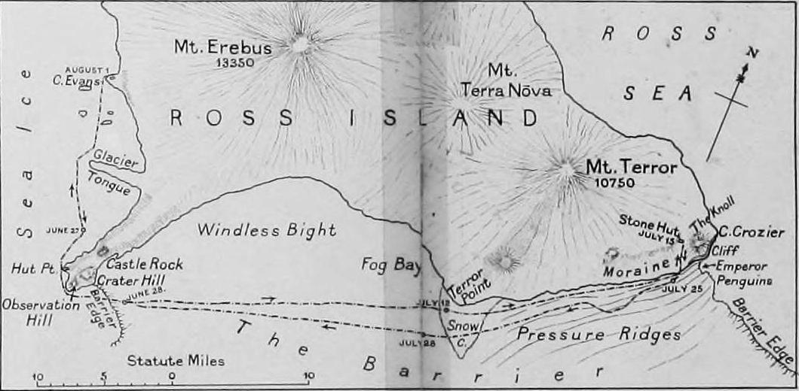

Chapter 10
The Launch of Scott’s Final
Henry Bowers wrote in his diary for 31 October 1911 with the cramped urgency of a man who had learned to record facts while his hands still shook from cold or hurry or both. The entry is not a narrative but a list that betrays its own chaos: weights disputed, items reassigned, the final calculation of what each sledge would carry when the order came to move.
He noted 750 pounds for the leading pony sledge, then crossed it out. The figure reappeared at 720, then 680, then a marginal note—“Scott says 650 maximum”—that itself sat beside another figure, 700, in a different pencil. The paper held the record of decisions made in haste and revised in doubt.
Beside the weights Bowers listed the components: sleeping bags, the modified tents, the cooking gear reduced to its absolute minimum, the scientific instruments that Scott refused to abandon, the personal clothing that each man would wear for weeks without change. The diary does not describe the hut’s interior—the building erected in 1911 on the north shore of Cape Evans—or the other men moving in the same compressed space, the ponies shifting in their stalls beyond the partition. It records only what Bowers could verify with his own hand: that the sledge he would help to load carried, at final accounting, 694 pounds, and that Scott had approved this figure with a gesture rather than a signature, already moving toward the door where the first light of the Antarctic summer showed above the Barrier.
The meteorological log for 1 November 1911 records conditions that appear, in the ledger’s neutral columns, almost favorable. Temperature at 0600: −15°F. Wind: light from the southeast. Visibility: good. The barometer held steady.
These figures, entered by whoever had drawn the morning watch, gave no warning of what the same log would record three hours later, when the wind had shifted to the southwest and risen to force 4, when the temperature had dropped twelve degrees, when the visibility that had seemed “good” became, for men trying to coordinate three separate departures across uneven terrain, a matter of guesswork and shouted coordinates. The log does not say that the motor sledge party had already left at 0800, that the pony parties were meant to follow at two-hour intervals, that the man-hauling teams would bring up the rear in a sequence designed to let each transport system operate at its own pace without interference.
It records only what instruments measured: wind, temperature, pressure, the abstract conditions within which human plans would either hold or dissolve.
Scott’s final dispatch to the Royal Geographical Society, written in the days before departure and entrusted to the Terra Nova when it left for New Zealand, carries a different tone than the private calculations Bowers set down. The dispatch is a public document, composed with the knowledge that it would be read in London, reported in newspapers, entered into the society’s proceedings. It speaks of the scientific program that would proceed alongside the polar march, of the three distinct methods of traction that would carry the party south, of the confidence that all preparation had been thorough.
Yet even here, between the lines of official optimism, Scott acknowledged what he could not control. He noted that a rival expedition under Captain Amundsen was known to be proceeding to the Antarctic, and that a race for the Pole might result. The phrasing is careful: the conditional mood of a man who had learned to write for multiple audiences, who could not admit the full weight of anxiety without risking the charge of alarm, who could not dismiss the threat without risking the charge of blindness.
What the dispatch does not say—what Scott’s journal for the same period records in a single bitter sentence—is that Amundsen’s dogs had already carried him to the Pole’s latitude, that the Norwegian’s streamlined, single-method transport had moved with a speed that Scott’s layered, polyglot system could not match. Scott wrote in his journal on 20 October, after learning of Amundsen’s depot-laying progress, that he had formed the opinion that dogs would be the most serious factor in the race. The contrast between dispatch and journal measures the distance between the performance of command and its private cost.
Before setting out on the South Pole journey, Scott had made arrangements intended to help the polar party home with the use of dogs. He instructed Cecil Meares, who was expected to have returned to Cape Evans by 19 December, that in late December or early January he should transport to One Ton Depot “Five XS rations [XS = ‘Extra Summit Ration’, food for four men for one week], 3 cases of biscuit, 5 gallons of oil and as much dog food as you can conveniently carry”. If this mission could not be carried out by dogs, then “at all hazard” a man-hauling team was to carry the XS rations to the depot.
Meares was further instructed that in about the first week in February, depending on news received from returning units, he should start a third journey south to hasten the return of the polar party and give it a chance to catch the ship, aiming to meet them about March 1 in Latitude 82 or 82.30.
The motor sledge party left first, as planned. Lieutenant Evans commanded, with Day and Lashly to manage the machines that had consumed seven times the expedition’s spending on dogs and ponies combined. The sledges carried fuel, spare parts, the mechanical complexity that Scott had gambled would transform polar travel. They moved out at 0800 into the light wind, their exhaust visible for a few minutes before distance and the curve of the Barrier swallowed them. The plan required them to travel fast, to lay depots ahead of the slower pony parties, to create a logistical spine that the entire expedition would follow.
Their departure was watched from the hut by those who would follow: the pony leaders checking their harness, the man-hauling teams still loading sledges whose weights had not yet received final approval. The sequence was meant to be orderly, each party finding the trail broken by those before, each transport system operating in its optimal zone.
What the plan could not accommodate was the friction of actual departure—the pony that balked at loading, the sledge runner that cracked under final strain, the snow-shoe for the ponies that had been redesigned three times and still did not fit, that had to be lashed on with harness adjusted in the field by men whose fingers were already losing dexterity in the dropping temperature.
Bowers’s diary for 1 November continues the record of these frictions with the specificity of a man who understood that details would matter later, when success or failure would be reconstructed from exactly such notes. He recorded that the pony snow-shoes were a complete muddle. Oates said they cut the fetlocks. Bowers himself said they did not fit the smaller animals. Scott said they must use them. The final decision came down: all ponies to wear them for the first march, then reassess.
The entry sits beside a list of weights that had changed again: 650 pounds confirmed for his own sledge, 720 for Cherry-Garrard’s, a note that Wright’s sledge was overweight by 30 pounds and the excess transferred to Bowers’s. The arithmetic of redistribution, done in the cold with frozen pencils, with animals stamping and the wind rising, with the motor sledge party already two hours gone and no communication possible until the first depot.

Bowers did not record his own feelings. The diary gives only action: repacked twice, final loading at 1130, moved off at 1145. Forty-five minutes late, in conditions that the meteorological log now recorded as squally, with drifting snow.
The pony parties followed in the staggered sequence that Scott had designed. Oates led the first, with the animals he had selected, trained, and now doubted. His own diary for the period, fragmentary and often illegible, contains a single entry for 1 November: started, ponies poor, snow deep. The compression speaks louder than elaboration.
He had warned against this transport from the beginning, had argued for more dogs, had watched the ponies weaken through the winter, had redesigned the snow-shoes twice himself in the weeks before departure. Now he was committed to them, his expertise harnessed to a system he had predicted would fail. The ponies moved onto the Barrier in a line that stretched and compressed with each change of snow texture, each gust that drove crystals against their unprotected eyes. The snow-shoes, lashed on in haste, slipped on two animals within the first mile. Oates stopped the party, cut the bindings, reset them while the others waited in wind that the meteorological log at Cape Evans now recorded as force 5.
The delay was twelve minutes. The log does not record this. Bowers’s diary, trailing two hours behind, notes only that he found Oates’s party halted at mile 1.5, snow-shoe trouble, waited, cold.
The man-hauling parties formed the final element of the sequence, the human reserve that would carry the expedition’s ultimate weight when machines failed and animals could go no further. Scott himself led this party, with Wilson, Edgar Evans, and the seaman Crean. Their sledge, loaded with the scientific instruments that would not fit on the motor sledges or pony sledges, with the personal gear of men who would not return to Cape Evans for months, with the extra food that the plan required them to cache for their own return, weighed by final accounting 265 pounds per man. This was lighter than the Winter Journey’s loads, but the Winter Journey had covered 67 miles. The polar march would cover more than ten times that distance, at altitude, in conditions that no winter journey could simulate.
The men harnessed themselves to the sledge traces with the technique they had practiced: the single file, the synchronized step, the distribution of weight that let five men move a mass that would have immobilized any two. They left Cape Evans at 1430, three and a half hours after the motor sledges, two hours after the last pony party.
The meteorological log records the temperature at that hour: −28°F, with wind force 6. Scott’s journal notes that they started in good order, all well.
The convergence of these three lines—high command, front line, environment—produces a pattern that no single record captures completely. Scott’s journal moves between operational detail and strategic anxiety, between the immediate fact of travel and the accumulating awareness of what Amundsen’s progress meant. Bowers’s diary stays closer to the ground, to weights and times and the mechanical problems of snow-shoes and sledge runners.
The meteorological log offers the indifferent testimony of instruments, the conditions within which human plans would be tested. Together they show a system already under strain in its first hours: the motor sledges beyond communication, their success or failure unknown; the pony parties moving slower than planned, their animals already showing the effects of snow-shoes that cut or slipped; the man-hauling teams committed to loads that would grow heavier as they consumed food, as altitude and cold reduced their efficiency, as the need to cache supplies for return forced them to drag weight they would not immediately use.
Scott’s awareness of Amundsen shadowed these first marches with a pressure that his public dispatch could not acknowledge. The Norwegian had left his base at the Bay of Whales on 20 October, eight days before Scott’s first motor sledge moved onto the Barrier. Amundsen’s party was smaller: five men, fifty-two dogs, sledges loaded for speed rather than scientific comprehensiveness. His route was more direct: up a glacier his reconnaissance had shown to offer a smoother ascent than the Beardmore. His plan was simpler: dogs to the Pole, dogs back, no sequential transport system requiring coordination across hundreds of miles, no ponies to weaken and die, no motor sledges to break down. Scott knew these facts, or knew enough of them to measure the difference.
His journal for 1 November, after the dry recording of departure, returns to the comparison in a passage that moves from observation to something like self-interrogation. He wrote that Amundsen’s plan was simple and effective. Their own was complex and, he still believed, more comprehensive. But comprehensiveness takes time. Time is what they may not have.
The first camp on the Barrier, established by the motor sledge party at 5 miles, became the first node in the network that Scott’s plan required. The pony parties reached it at 1800, the man-hauling party at 1930. The meteorological log at this camp, begun by Evans and continued by those who followed, recorded temperature −31°F at 2000, wind dropping to force 3. The parties combined for the night in the standard Antarctic routine: tent pitched, cooker lit, the ration of pemmican and biscuit distributed according to the schedule that physiologists had calculated for marching men.
The motor sledges stood in the darkness beyond the tent, their engines cooling, their mechanical condition unexamined in the hurry of camp-making. The ponies, tethered in a line, shifted and stamped in snow-shoes that had already damaged two animals’ legs.
Oates examined them by candlelight, his diagnosis unrecorded but his subsequent action clear: before the next march, he would remove the snow-shoes from three ponies and carry them himself, redistributing weight that the plan had not anticipated.
The second day repeated the pattern of the first with variations that the records show but do not fully explain. The motor sledges moved ahead, their speed already reduced by soft snow that the machines’ weight compressed but could not glide across. The pony parties followed at intervals that stretched as animals weakened, as snow-shoes were removed and the animals sank to their hocks in drifts that the leading parties had churned. The man-hauling teams, starting last, found the trail broken but the snow destabilized, the surface that had supported the first sledge now collapsed into a track that dragged at runners and feet alike.
Scott’s journal for 2 November records heavy going, a phrase that appears in polar literature with the weight of shared experience: the resistance of snow that has lost its crystalline structure, the expenditure of energy that produces distance without the satisfaction of speed. Bowers’s diary is more specific: 10 miles, 11 hours, ponies finished. Oates wants to shoot the weakest. Scott refuses. Discussion.
This discussion, compressed into a single word, opens onto the first of the decisions that would accumulate across the polar march. The weakest pony, a small black animal named for a donor’s estate, had stopped twice in the final miles, had required unloading and reloading, had cost the party forty minutes that the plan could not absorb.
Oates’s recommendation was professionally clear: reduce the drag on the system, convert the animal to meat that could be cached, accept the loss of one transport unit to preserve the efficiency of the others. Scott’s refusal was equally characteristic: the animal might recover, the plan required all ponies to reach the Beardmore, the psychological cost of early abandonment would exceed the mechanical benefit.
The diary records no resolution. The pony lived, marched on the third day, stopped again at 7 miles, was finally shot on the fourth. Its meat was cached at the 20-mile depot, a monument to the delay that its survival had cost.
The motor sledges, meanwhile, had reached the 15-mile mark before the failure that the plan had not contingency-planned. The second machine, commanded by Day, developed an engine fault that Lashly could not repair with the tools and parts carried. The diary of this failure does not survive in Day’s hand; we have only Evans’s subsequent report, written after the party’s return, and the meteorological log’s abrupt note that the second sledge had halted while the first proceeded. The first machine, commanded by Evans himself, continued for two more miles before its own engine overheated in the soft snow, before the realization came that two machines designed to lay depots ahead of the main party were themselves consuming the fuel that was meant to be cached, that the mechanical gambit on which so much money and hope had been staked was failing in the first forty-eight hours of its test.
This failure, reported to Scott when the man-hauling party reached the 15-mile camp on 3 November, produced a decision that the records show but whose psychology we can only infer. Scott could have turned back with the motor sledge party, could have accepted that his transport plan was already compromised, could have revised the entire sequence while still within reach of Cape Evans.
Instead he pressed on, leaving Evans and his men to salvage what they could from the machines, to cache the fuel and parts that might be retrieved, to return to base while the main expedition continued with the two remaining transport systems. His journal for 3 November records this decision with the flatness of a man who has already moved beyond it: motors abandoned for present, ponies and man-hauling to continue, Amundsen’s progress unknown but presumed advanced.
The presumption was correct. Amundsen, on the same date, was already at 80°S, moving at fifteen miles per day on a surface that his dogs crossed with the efficiency that Scott’s mixed transport could not match.
The abandonment of the motor sledges collapsed one-third of Scott’s sequential plan. The two remaining systems—ponies and men—now bore the full weight of the expedition’s logistical needs. The ponies, already weakened by snow-shoes and soft snow, were asked to cover the distance that machines had failed to master. The men, already hauling scientific loads that Amundsen had left behind, were asked to compensate for the failure of the technology that was meant to spare them. The fragility cascade had begun: not a single catastrophic error but the sequential failure of interdependent systems, each breakdown forcing greater strain on the survivors, each strain consuming the margin that might have absorbed the next failure.
Bowers’s diary for 4 November records the adjustment: redistributed motor sledge loads, his sledge now 780 pounds, Scott says they will cache at 30 miles and lighten for the glacier. The figure—780 pounds—exceeds what Bowers had recorded as the maximum only four days before. The cache plan, improvised in the field, acknowledges that the original depot schedule cannot be met, that the support parties will turn back earlier than planned, that the polar party will enter the final stage with less food laid ahead than the calculations had required. These are not yet fatal decisions. The polar party is still strong, the weather still within manageable range, the distance to the Pole still abstract enough to permit optimism. But the pattern is set: the improvisation, the redistribution, the acceptance of weight and risk that the original plan had sought to distribute across three transport systems.
The comparison with Amundsen, which Scott’s journal had begun in private, now enters the operational record with the weight of confirmed fact. The Norwegian’s base at the Bay of Whales lay 60 miles closer to the Pole than Scott’s at Cape Evans. His route, up the glacier he had reconnoitered, saved 100 miles of Barrier travel and offered an ascent that his dogs could manage without the relay system that Scott’s ponies would require. His party was smaller, his loads lighter, his method proven in Arctic experience that Scott’s naval career had not provided. These advantages, accumulated before either expedition left its base, now expressed themselves in the daily arithmetic of miles and hours.
Scott’s journal for 5 November, after recording another day of heavy going and another pony shot, adds a sentence that moves from observation to something like recognition. He wrote that if Amundsen had had good luck with his dogs, he might be at the Pole before they reached the glacier.
The conditional has shifted. “Might be” acknowledges possibility; “before we reach the glacier” acknowledges that the race is already being lost, that the goal is no longer to arrive first but to arrive at all.
The last man-hauling party is on the Barrier, committed to a plan whose first mechanical component is already under strain.